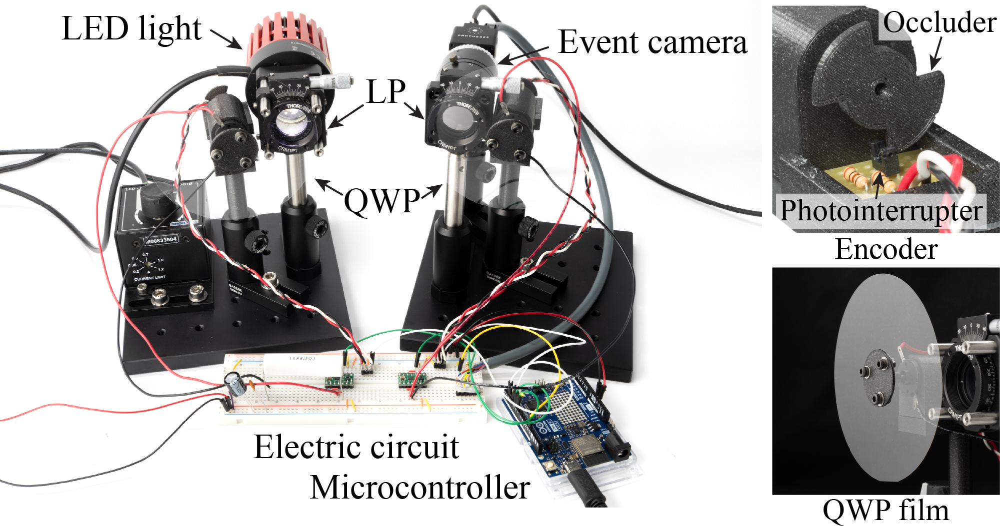
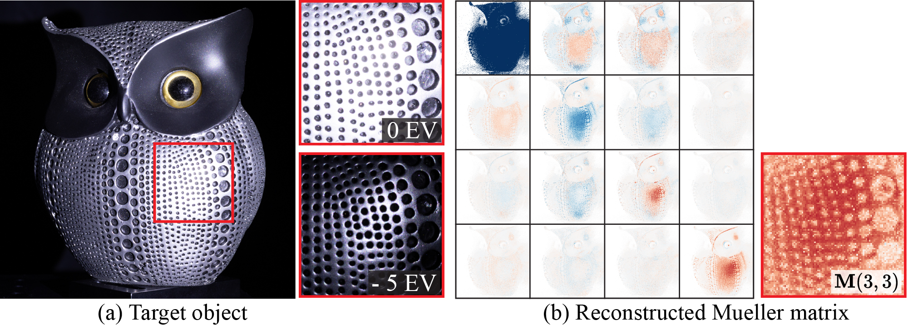
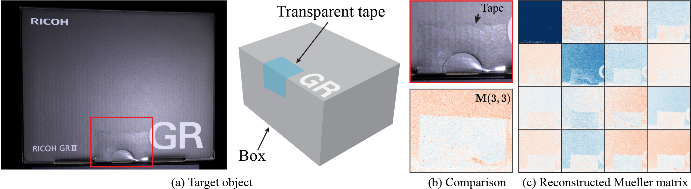

Light-matter interactions modify both the intensity and polarization state of light. Changes in polarization, represented by a Mueller matrix, encode detailed scene information. Existing optical ellipsometers capture Mueller-matrix images; however, they are often limited to capturing static scenes due to long acquisition times. Here, we introduce Event Ellipsometer, a method for acquiring a Mueller-matrix video for dynamic scenes. Our imaging system employs fast-rotating quarter-wave plates (QWPs) in front of a light source and an event camera that asynchronously captures intensity changes induced by the rotating QWPs. We develop an ellipsometric-event image formation model, a calibration method, and an ellipsometric-event reconstruction method. We experimentally demonstrate that Event Ellipsometer enables Mueller-matrix video imaging at 30fps, extending ellipsometry to dynamic scenes.
Event Ellipsometer
In this paper, we present Event Ellipsometer, a Mueller-matrix imaging method capable of capturing dynamic and HDR scenes.
Imaging System
Event Ellipsometer consists of fast-rotating quarter-wave plates (QWPs) and linear polarizers (LPs) in front of both the event camera and an LED light source.
The rotating QWPs modulate the polarization state of light emitted and received by the imaging system, resulting in intensity changes captured as events.

We used two brushed direct current (DC) motors rotating the QWP films, resulting in fast rotation at 4500 rpm which is cable of capturing 30fps Mueller-matrix video.
Results
Photoelasticity Analysis
Photoelasticity is an optical property whereby dielectric materials exhibit birefringence under deformation.
Our system enables observing photoelasticity at video rates, revealing stress distribution in transparent materials.
Dynamic Human Capture
We demonstrate the Mueller-matrix reconstruction of dynamic facial expressions and hair movements, revealing intricate polarization properties.
Face
Hair
HDR Mueller-matrix Imaging
Our event-based ellipsometer enables Mueller-matrix imaging of HDR scenes.
While conventional ellipsometers require multiple exposures to prevent overexposure, our method captures the Mueller matrix in HDR scenes without the need for additional measurement.

Transparent Tape Detection
Detecting transparent objects is challenging for conventional cameras.
Sticky tape, a common transparent material used for sealing cardboard, exhibits birefringent properties due to the molecular structure of its stretched plastic.
The reconstructed Mueller matrix shows the birefringent property, and we can clearly recognize the tape region.

Citation
If you find our work useful in your research, please consider citing:
@article{maeda2024event,
title={Event Ellipsometer: Event-based Mueller-Matrix Video Imaging},
author={Maeda, Ryota and Moon, Yunseong and Baek, Seung-Hwan},
journal={arXiv preprint arXiv:2411.17313},
year={2024}
}